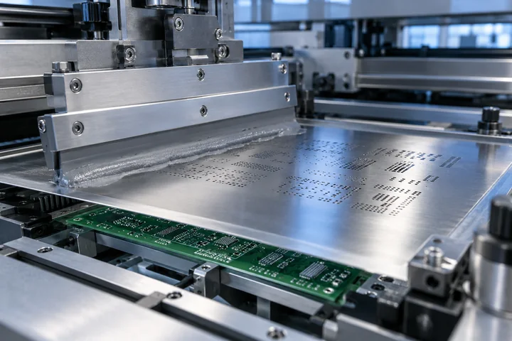
Solder Paste Printing
Apply solder paste to the PCB.
Follow the product, the output and the review at every stage.
Confirm the product and prepare materials.
Produce the electronic module.
Combine components into a complete device.
Apply the intended product settings.
Review applicable functions.
Prepare the product for delivery.
Bring the product, components and assembly information together before production.
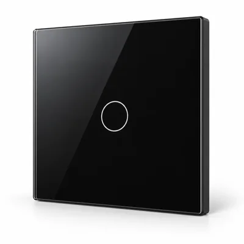
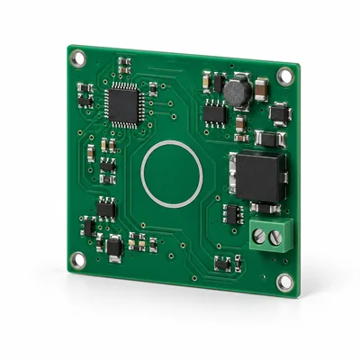
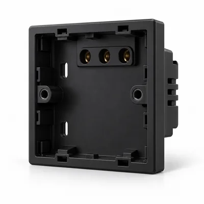
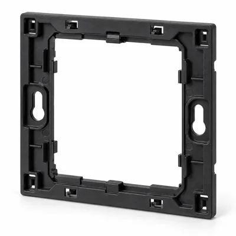
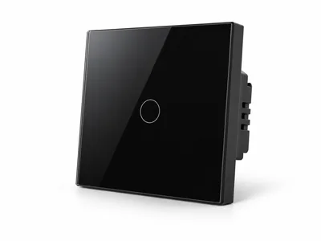
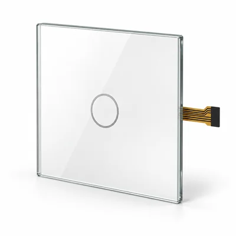
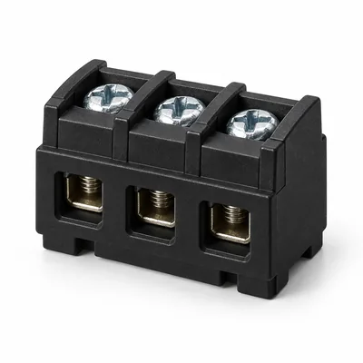
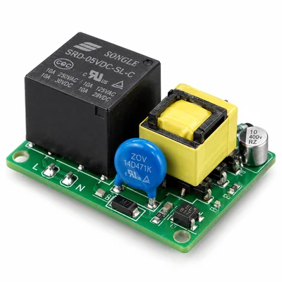
Confirm the intended model, version and project requirements.
Prepare the relevant electronics, panels and structural parts.
Review the product information and assembly requirements.
Components become a complete electronic module.

Apply solder paste to the PCB.
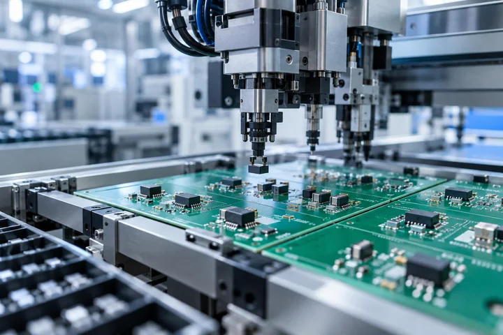
Place the electronic components.
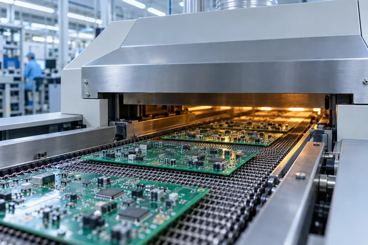
Complete the soldering stage.
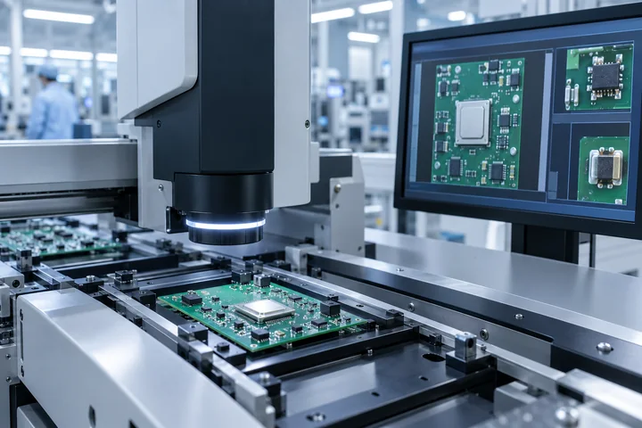
Review the assembled electronic module.
Stage output: assembled electronic module.
A clear sequence from the electronic module to the complete device.
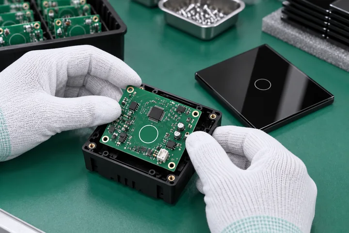
Install the electronic module in the housing.
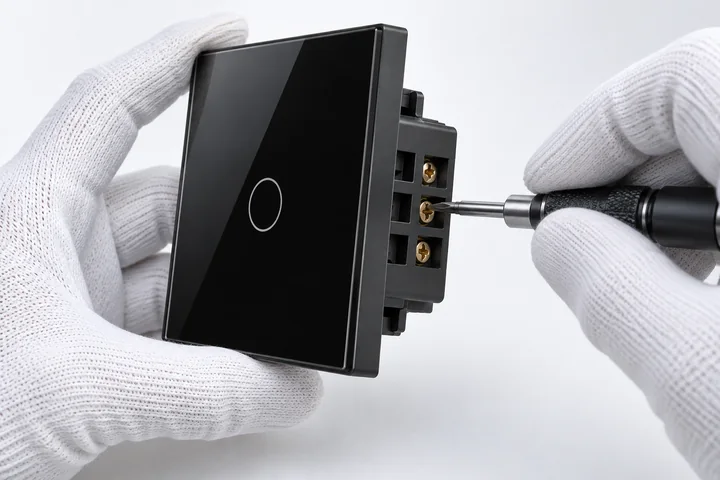
Assemble the connection points.
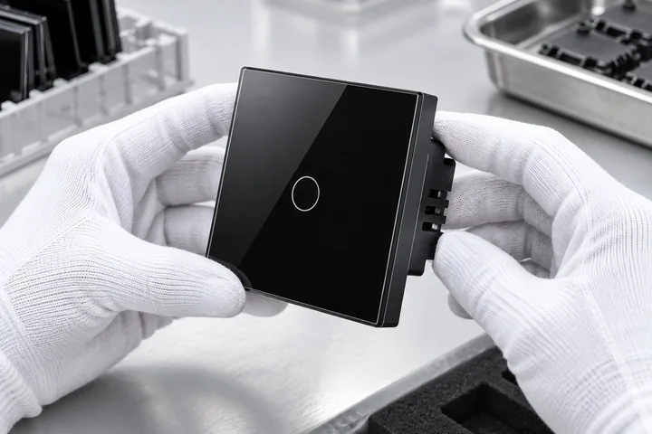
Fit the housing and check alignment.
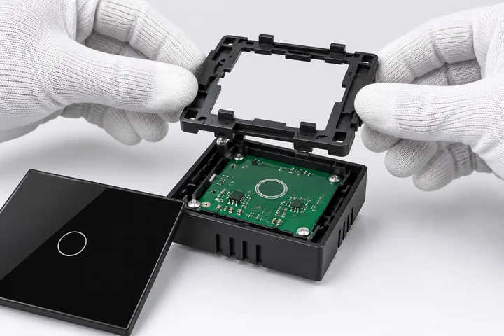
Install the frame for structural support.
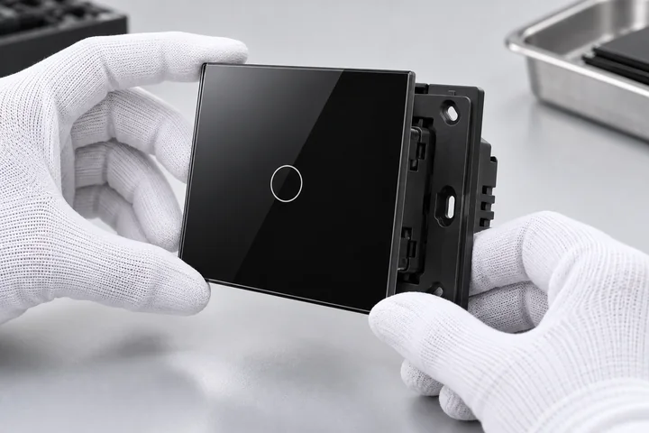
Fit the front panel to complete the assembly.
Product settings and functional checks follow the intended version.
Review the settings relevant to the intended product version.
Check the relevant control and connection functions.
Review the outcome and any items requiring follow-up.
Stage reviews connect the completed work with the next process.
Review the relevant inspection items.
Proceed when the review requirements are met.
Describe the observed issue.
Review the required action.
Complete the appropriate correction.
Return to stage review and confirm the outcome.
Review requirements depend on the product and agreed specification.
Bring the finished product and the delivery items together.
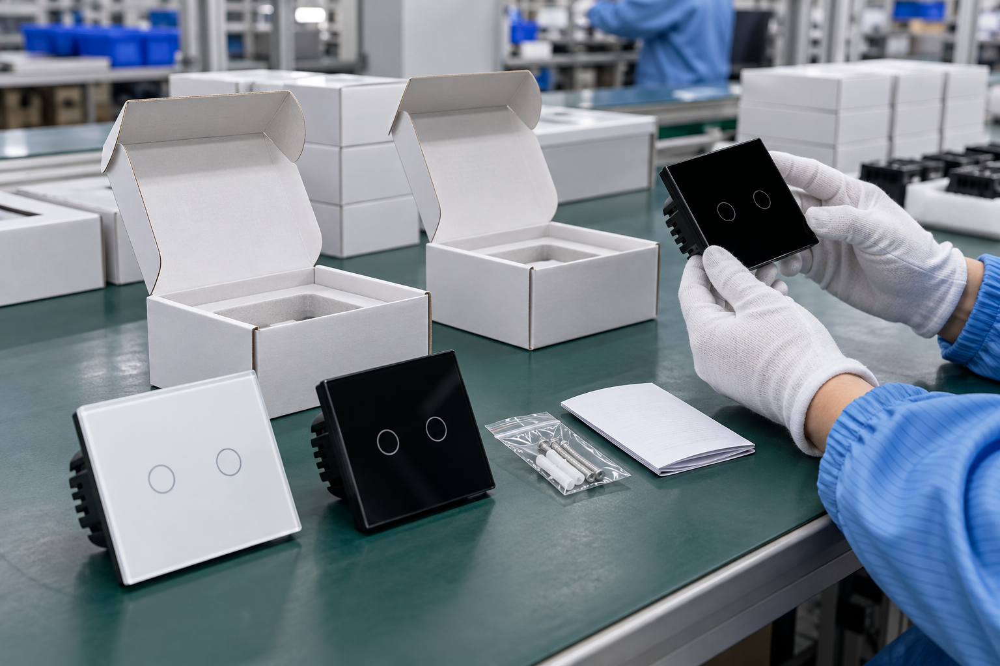
Review the product identification and relevant information.
Confirm the intended product version.
Check the items required for the selected product.
Prepare appropriate packaging for the product.
Common manufacturing stages, with review areas relevant to each product type.
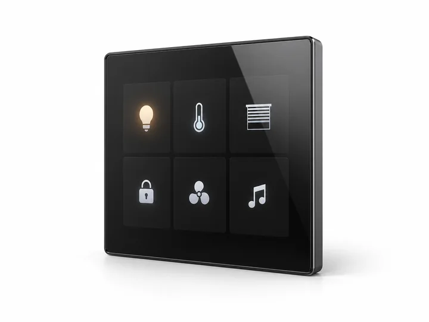
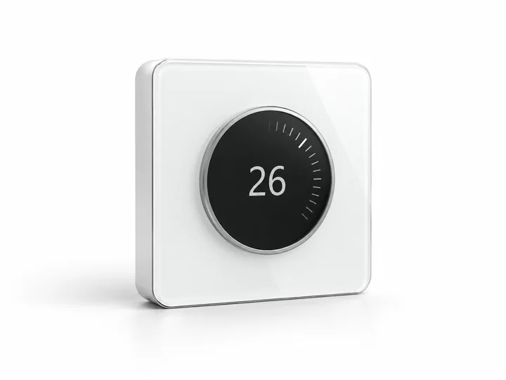